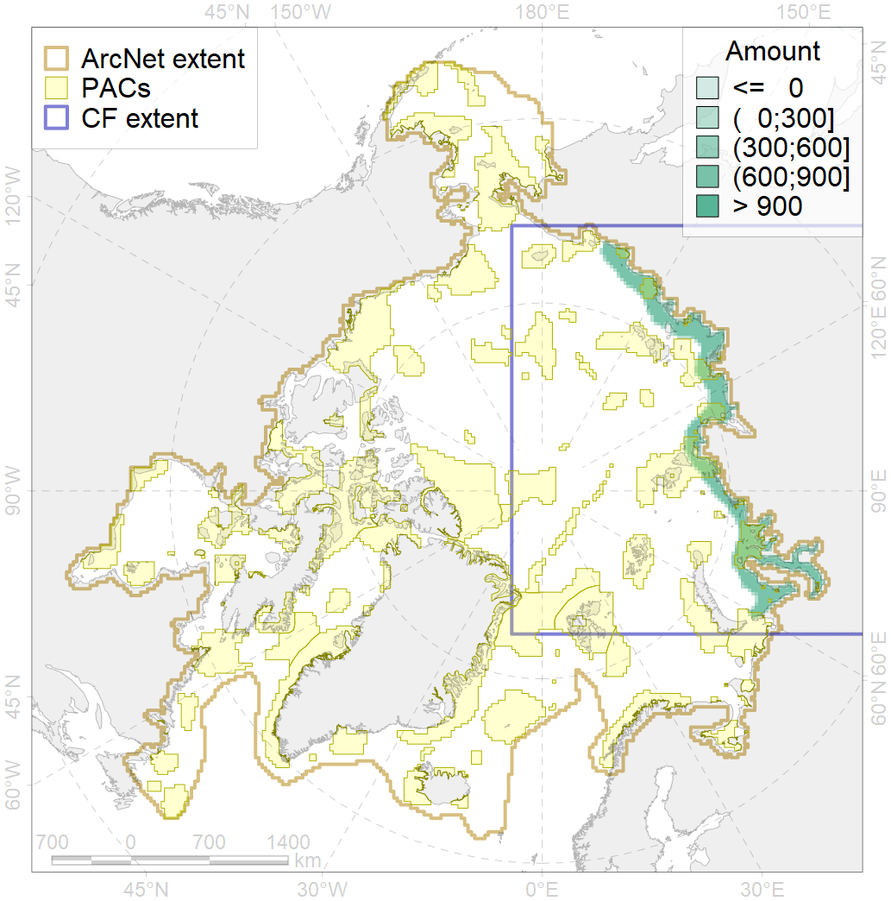
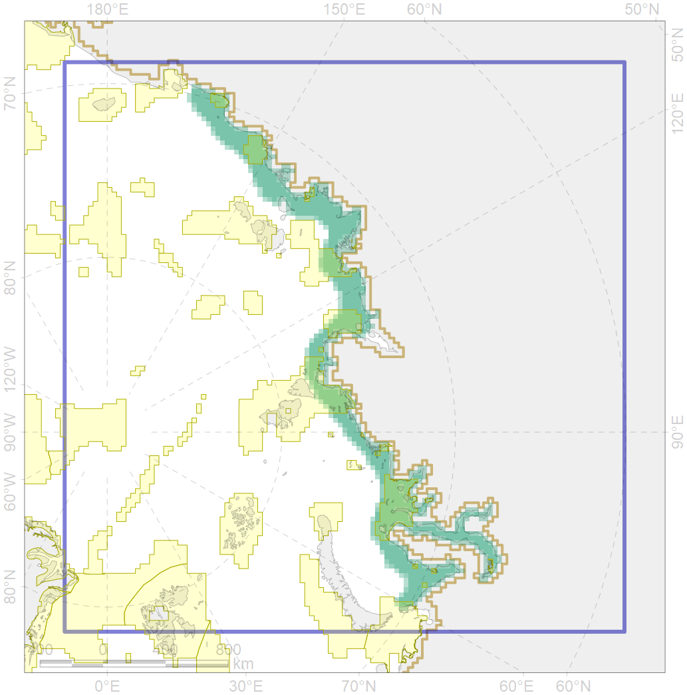

4010

| CF ID | 4010 |
| CF Name | Feeding area of the Muksun (Coregonus muksun) |
| Time Period | 1950-2000s |
| Source(s) | Chereshnev 2008; Reshetnikov, 2010 |
| Seasonality | June-October |
| Depth Horizon | 0-60 |
| Methodology | Compiled from literature sources based on field observations |
| Author Name | N. Chernova |
| Notes | |
| Conservation Target Set in the Scenario | 0.324 |
| Conservation Target Achieved in the Scenario | 0.327 (Scenario: 100.8%) |
| PAC ID | Proportion in the PAC | Contribution to ArcNet Target Achievement | PAC’s Contribution to the Achieved Target |
|---|---|---|---|
| 9 | 1.3% | 2.3% | 2.3% |
| 10 | 3.5% | 8.2% | 8.1% |
| 12 | 3.8% | 11.1% | 10.9% |
| 13 | 3.9% | 11.6% | 11.5% |
| 14 | 6.6% | 18.9% | 18.6% |
| 15 | 0.3% | 0.9% | 0.9% |
| 16 | 10.5% | 30.2% | 29.8% |
| 17 | 0.2% | 0.5% | 0.5% |
| 18 | 0.4% | 1.1% | 1.1% |
| 20 | 0.5% | 1.3% | 1.3% |
| inner | 30.9% | 86.1% | 85.1% |
| outer | 68.5% | 14.7% | 14.5% |